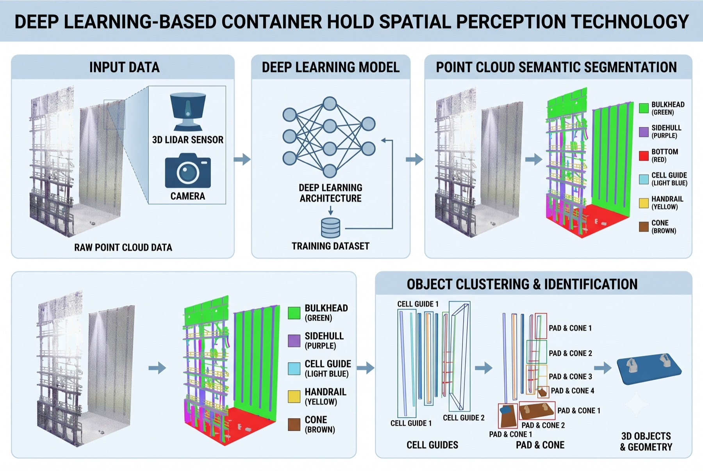
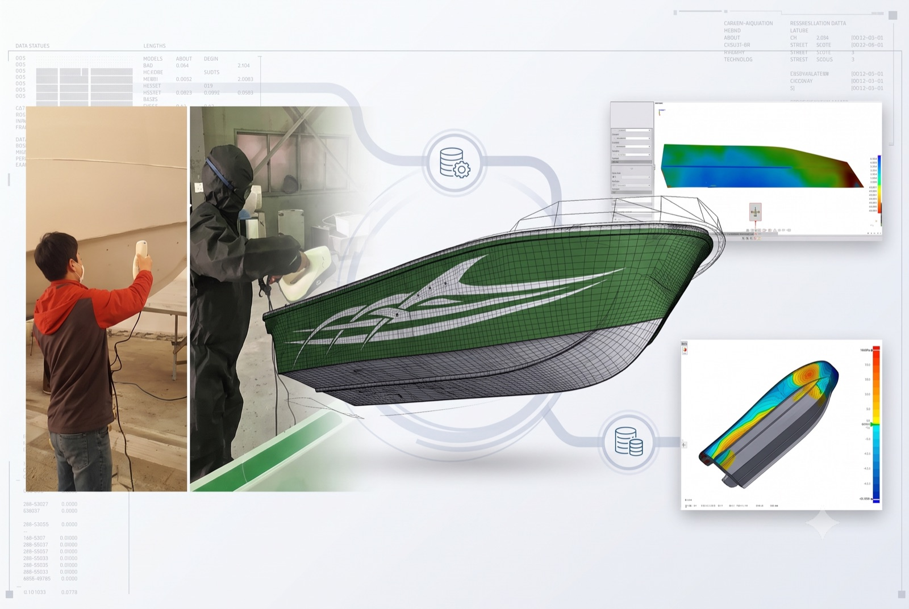
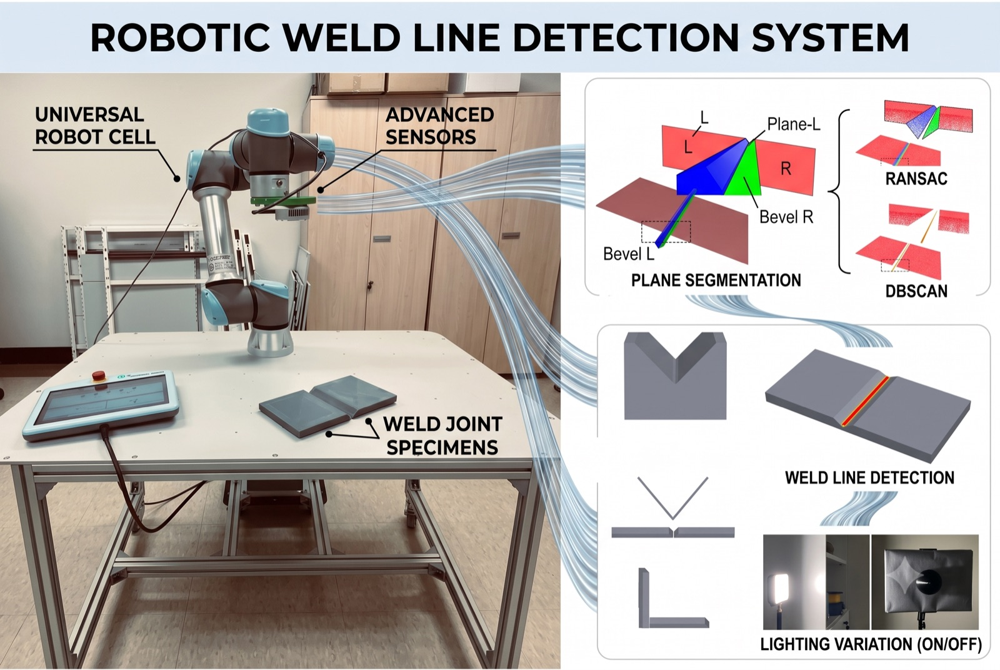

AI DATASET OPERATIONS
Optimize3D Labeler
대용량 포인트클라우드에서 필요한 영역을 선택·클리핑하고 의미론적·객체 단위 라벨을 원본 포인트와 연결해 관리합니다.
- 대규모 데이터 영역 선택·클리핑
- Semantic·Instance 라벨링
- 라벨 클래스·변경 이력 관리
Scan to Execution
현장 스캔, 공간 AI, 품질검사, 피지컬AI를 하나의 데이터 흐름으로 확인할 수 있습니다.

ACTIVE DATA FLOW
선박블록, 카고홀드, 몰드, 배관과 작업공간을 포인트클라우드·사진·CAD 기준으로 묶습니다.
Point cloud / Photo / CAD referenceOptimize3D Point Cloud Suite
Optree Framework가 초대용량 데이터를 공통 구조로 관리하고, Recognition Engine과 Labeler·MultiViewer·Compare가 객체인식부터 통합 검토와 정량 비교까지 연결합니다.
AI DATASET OPERATIONS
대용량 포인트클라우드에서 필요한 영역을 선택·클리핑하고 의미론적·객체 단위 라벨을 원본 포인트와 연결해 관리합니다.
SYNCHRONIZED REVIEW
Optree 기반 계층형 LOD의 주요 기능을 MultiViewer에 구현·적용해 여러 초대용량 스캔, 시점, 편집본과 AI 결과를 단계적으로 불러오고 동기화된 장면에서 검토합니다.
QUANTITATIVE COMPARISON
Scan-to-Scan, Scan-to-CAD와 AI 추론 결과를 비교해 편차, 누락, 오탐과 품질 판단 근거를 정량화합니다.
OPTREE CORE
Optree Framework는 Optimize3D가 독자적으로 개발한 Octree 기반 산업용 포인트클라우드 구조입니다. 초대용량 데이터를 공간 영역과 LOD 단계로 계층화하고 필요한 영역과 상세도만 점진적으로 불러옵니다. 주요 LOD 구조는 MultiViewer에 구현·적용되어 여러 대규모 스캔을 효율적으로 검토하며, 경량 표시 데이터와 원본 포인트의 연결도 유지합니다.
GEO-TOPOLOGY INTELLIGENCE
조선소, 엔지니어링사, 대형 제조·건설 현장의 초대용량 포인트클라우드 인식을 실용화한 산업용 엔진입니다. FPFH 기반 국부 기하 특징과 TDA 기반 위상 특징을 Optree 노드 단위로 계산·관리하고, 딥러닝 특징과 융합해 복잡한 산업 객체를 구분합니다.
PRACTICAL AT SCALE
전체 데이터를 한 번에 적재하지 않고 필요한 Optree 노드와 해상도만 처리합니다. 특징 캐시와 원본 인덱스 연결을 유지해 반복 학습, 검토, 추론 결과의 실무 활용성을 높입니다.
OPEN INTEROPERABILITY
특정 뷰어나 학습 환경에 종속되지 않습니다. 표준 파일, API와 프로젝트 인터페이스를 통해 포인트클라우드, CAD·BIM, AI, 디지털트윈 및 엔지니어링 플랫폼과 연계할 수 있습니다.
Three Solution Pillars
장비 판매보다 프로젝트의 입력 데이터, 판단 기준, 필요한 결과물에 맞춰 범위를 구성합니다.
대상과 현장 조건에 맞는 3D 스캐닝부터 정합, 기준 좌표, 역설계와 제작 보조 데이터까지 연결합니다.
포인트클라우드에서 객체와 공간 관계를 읽고 편차, 허용오차, 검사 우선순위를 판단 자료로 정리합니다.
실제 작업공간과 센서 조건을 반영해 로봇 경로, 충돌 후보, 용접선과 실행 좌표를 검토합니다.
Applied Cases
선박·제조 현장의 스캔 데이터가 실제 검사, 인식, 자동화 데이터로 이어진 사례입니다.
조선소 컨테이너선 카고홀드 포인트클라우드에서 구조물과 작업공간을 인식하고, 객체 분할·공간 관계·검사 기준 데이터를 자동화 모듈로 정리합니다.

조선소 LNGC 화물창 편평도 계측 과정에서 스캐폴딩 시스템을 탐지·분할하기 위한 딥러닝 기반 포인트클라우드 처리와 후처리 연구를 수행했습니다.

선박 블록 하부 포인트클라우드에서 지지대를 분할·추출하고, 기준 배치와 비교해 설치 편차를 검사합니다.

대용량 선박 블록·조선소 포인트클라우드에서 위상적으로 중요한 구조와 기하학적 국부 특징을 추출해 데이터 규모를 줄이고, 딥러닝 객체탐지에 필요한 형상 정보와 성능을 유지하는 경량 데이터셋을 구성했습니다.

소형선박과 양산몰드의 스캔 데이터를 기준 형상과 비교해 정도관리 및 공정개선 가능성을 검증했습니다.

선박블록 포인트클라우드 환경, 3D 비전 센서, 3D 프린팅 시험편을 연결해 로봇 경로·충돌·접근성·용접선 추출 가능성을 검토합니다.

Operating Model
단순 3D 스캐닝 결과 확인에서 벗어나, 스캔 데이터를 인공지능으로 지능화해 검사·역설계·품질판정·피지컬AI 실행 데이터까지 확장할 수 있는 기반을 만듭니다.
포인트클라우드, CAD, 사진, 검사 기준과 현장 제약을 확인합니다.
좌표계, 기준 형상, 허용 오차와 판정 항목을 정의합니다.
편차맵, 특징 추출, 객체 분할, 공간추론과 리포트 형식을 검증합니다.
검사 리포트, CAD 재구성, 지그 설계와 피지컬AI 실행 데이터로 납품합니다.
Research Backbone by OPTLab
국립목포해양대학교 최적선박생산기술연구실의 조선소·제조 현장 공동 연구를 바탕으로 3D 스캐닝, 품질관리, 역설계, 기계학습, 적층가공, 협동로봇 실적을 Optimize3D의 기술 기반으로 사용합니다.
Contact
포인트클라우드, CAD, 사진, 검사 기준, 현장 문제 중 하나만 있어도 적용 범위를 함께 정리할 수 있습니다.